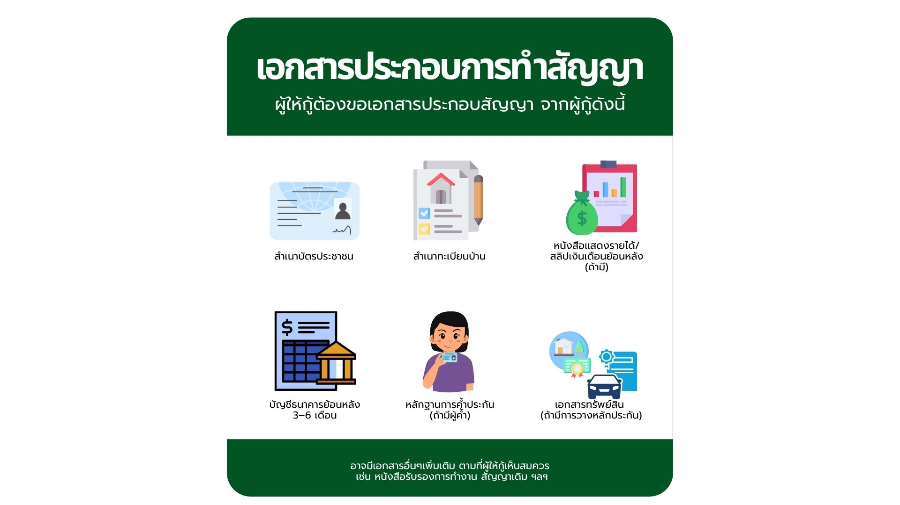
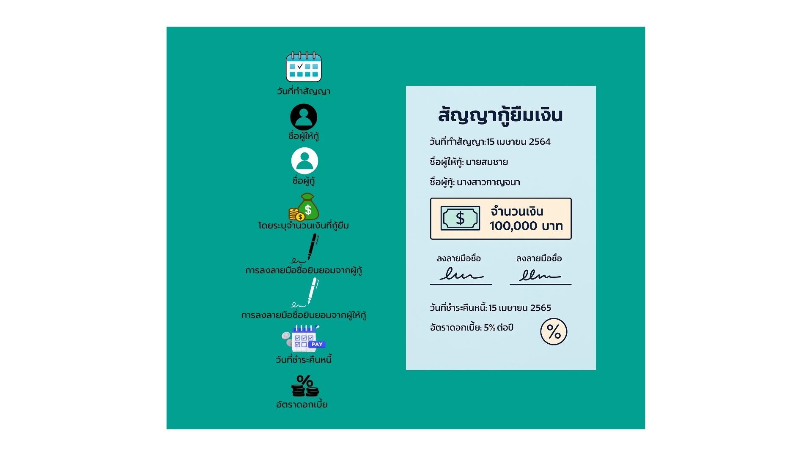

สัญญาการกู้เงิน
การกู้ยืมเงิน เป็นสัญญาชนิดหนึ่ง มีคู่กรณีสองฝ่าย คือ ฝ่ายหนึ่งเรียกว่า “ผู้ให้กู้ยืม” และอีกฝ่ายเรียกว่า “ผู้กู้ยืม” ในประมวลกฎหมายแพ่งและพาณิชย์ มาตรา 653 “การกู้ยืมเงินกว่าสองพันบาทขึ้นไปนั้น ถ้ามิได้มีหลักฐานแห่งการกู้ยืมเป็นหนังสืออย่างใดอย่างหนึ่ง ลงลายมือชื่อผู้ยืมเป็นสำคัญจะฟ้องร้องให้บังคับคดีหาได้ไม่
ในการกู้ยืมเงินมีหลักฐานเป็นหนังสือนั้น ท่านว่าจะนำสืบการใช้เงิน ได้ต่อเมื่อมีหลักฐานเป็นหนังสือ อย่างใดอย่างหนึ่ง ลงลายมือชื่อผู้ให้ยืม มาแสดงหรือเอกสารอันเป็นหลักฐานแห่งการกู้ยืมนั้น ได้เวนคืนแล้ว หรือ ได้แทงเพิกถอน ลงในเอกสารนั้นแล้ว”
สัญญากู้ยืมเงินเป็นสัญญายืมใช้สิ้นเปลือง หมายความว่า สัญญาที่ผู้ให้ยืมได้โอนกรรมสิทธิ์ในทรัพย์สินนั้นเป็นปริมาณมีกำหนดให้แก่ผู้ยืม และผู้ยืมตกลงว่าจะคืนทรัพย์สินเป็นประเภท ชนิดและปริมาณเช่นเดียวกันให้แทนทรัพย์สินซึ่งให้ยืมนั้น และสัญญายืมนี้จะสมบูรณ์ต่อเมื่อส่งมอบทรัพย์สินที่ยืม เป็นไปตามประมวลกฎหมายแพ่งและพาณิชย์ มาตรา 650 วรรคหนึ่ง "อันว่ายืมใช้สิ้นเปลืองนั้น คือสัญญาซึ่งผู้ให้ยืมโอนกรรมสิทธิ์ในทรัพย์สินชนิดใช้ไปสิ้นไปนั้นเป็นปริมาณมีกำหนดให้ไปแก่ผู้ยืม และผู้ยืมตกลงว่าจะคืนทรัพย์สินเป็นประเภท ชนิด และปริมาณเช่นเดียวกันให้แทนทรัพย์สินซึ่งให้ยืมนั้น"
ดังนั้น การกู้ยืมเงินหรือสัญญากู้ยืมเงิน จึงเป็นสัญญายืมใช้สิ้นเปลือง ที่ “ผู้กู้ยืม” ไปขอกู้ยืมเงินจากบุคคลหนึ่ง ซึ่งเรียกว่า “ผู้ให้กู้ยืม” โดยผู้กู้ยืมทำสัญญาหรือข้อตกลงว่าจะชดใช้เงินคืนให้ภายในกำหนดเวลาใดเวลาหนึ่ง ซึ่งจะกำหนดอัตราดอกเบี้ยด้วยหรือไม่ก็ได้ แต่ตามกฎหมายไม่เกินร้อยละ 15 ต่อปี และสัญญากู้ยืมเงินจะสมบูรณ์ก็ต่อเมื่อได้มีการส่งมอบเงินที่กู้ยืมกันแล้ว เป็นไปตามประมวลกฎหมายแพ่งและพาณิชย์ มาตรา 650 วรรคสอง "สัญญานี้ย่อมบริบูรณ์ต่อเมื่อส่งมอบทรัพย์สินที่ยืม"
หลักฐานการกู้ยืมเงิน มี 2 กรณี
- กรณีจำนวนเงินกู้ยืมไม่เกิน 2,000 บาท กฎหมายไม่ได้กำหนดให้ต้องทำสัญญากู้ยืมเงินต่อกัน แต่ถ้าผิดสัญญาก็สามารถฟ้องร้องตามกฎหมายได้
- กรณีจำนวนเงินที่กู้ยืมเงิน เกิน 2,000 บาทขึ้นไป กฎหมายกำหนดให้การกู้ยืมเงินจะต้องมีหลักฐานแห่งการกู้ยืมเงิน มิเช่นนั้นจะฟ้องร้องให้บังคับคดีต่อกันมิได้ หลักฐานการกู้ยืมเงินจะอยู่ในรูปแบบใดก็ได้แต่ต้องเป็นลายลักษณ์อักษร มีข้อความชัดแจ้งว่ามีการกู้ยืมเงินกันเกิดขึ้น เป็นจำนวนเท่าใด และตกลงจะใช้คืนเมื่อใด สิ่งสำคัญจะขาดเสียไม่ได้ คือ ลายมือชื่อของผู้กู้ยืมเป็นสำคัญ กรณีลงลายพิมพ์นิ้วมือชื่อจะต้องมีลายนิ้วมือ 2 คน เป็นพยานรับรอง ประมวลกฎหมายแพ่งและพาณิชย์ มาตรา 653
องค์ประกอบสำคัญของสัญญากู้ยืมเงิน

- ข้อความที่แสดงถึงการกู้ยืมเงินระหว่างกัน
- วันที่ทำสัญญา
- ชื่อผู้ให้กู้
- ชื่อผู้กู้
- โดยระบุจำนวนเงินที่กู้ยืม
- การลงลายมือชื่อยินยอมจากผู้กู้
- การลงลายมือชื่อยินยอมจากผู้ให้กู้
- วันที่ชำระคืนหนี้
- อัตราดอกเบี้ย
เงื่อนไขการชำระหนี้
- ผู้กู้ตกลงชำระหนี้เดือนละเท่าไหร่?
- ส่งมอบเงินคืนด้วยวิธีไหน?
- ครบกำหนดคืนเงินทั้งหมด ภายในวันที่เท่าไหร่?
เงื่อนไขการผิดนัดชำระหนี้
ควรระบุว่า เงื่อนไขการคิดดอกเบี้ยทบต้น กรณีที่ผู้กู้ผิดนัดชำระหนี้ค้างนานเกิน 1 ปี ในสัญญากู้ยืมเงิน ‘การคิดดอกเบี้ยทบต้น คือ คิดดอกเบี้ยในอัตราดอกเบี้ยที่ค้างชำระอีกทีหนึ่ง ทำให้ดอกเบี้ยเพิ่มจำนวนขึ้นอย่างรวดเร็ว ป้องกันการค้างชำระหนี้จากผู้กู้’
เอกสารประกอบการทำสัญญา

- สำเนาบัตรประจำตัวประชาชน หรือ สำเนาบัตรข้าราชการ/รัฐวิสาหกิจ อย่างใดอย่างหนึ่ง
- สำเนาทะเบียนบ้าน หรือ สำเนาทะเบียนสมรส หรือ ทะเบียนหย่า หรือ ใบมรณบัตร อย่างใดอย่างหนึ่ง
- สำเนาหลักฐานการเปลี่ยนชื่อ-นามสกุล
- หากเป็นนิติบุคคล ให้ใช้สำเนาทะเบียนการค้า หรือ หนังสือรับรองการจดทะเบียนนิติบุคคล
อัตราดอกเบี้ย
- ดอกเบี้ยที่กำหนดโดยกฎหมาย ในกรณีสถาบันการเงินหรือธนาคาร กฎหมายให้อำนาจเรียกดอกเบี้ยได้สูงกว่าร้อยละ 15 ต่อปีได้ แต่ต้องเป็นไปตามประกาศข้อกำหนดของธนาคารซึ่งมีกฎหมายรองรับ (พระราชบัญญัติดอกเบี้ยเงินให้กู้ยืมของสถาบันการเงิน)
- ดอกเบี้ยเกินอัตราที่กฎหมายกำหนด ประมวลกฎหมายแพ่งและพาณิชย์ มาตรา 654 “ท่านห้ามมิให้คิดดอกเบี้ยเกินร้อยละสิบห้าต่อปี ถ้าในสัญญากำหนดดอกเบี้ยเกินกว่านั้น ก็ให้ลดลงมาเป็นร้อยละสิบห้าต่อปี” สรุปได้ว่า
- ดอกเบี้ยเกินอัตราที่กฎหมายกำหนด ถือว่าเป็นโมฆะทั้งหมด แต่เงินต้นสมบูรณ์ ก็คือไม่เป็นโมฆะ
- ผู้กู้ให้กู้คิดดอกเบี้ยล่วงหน้าแล้วนำไปรวมกับเงินต้นในสัญญากู้
- ผู้กู้ชำระดอกเบี้ยเกินอัตราที่กฎหมายกำหนดไปแล้วจะเรียกคืนไม่ได้
- ผู้ให้กู้ยังมีสิทธิในการเรียกดอกเบี้ยจากเหตุผิดนัดได้ด้วย
- ดอกเบี้ยกรณีผู้ให้กู้เป็นสถาบันการเงิน
- สัญญาระบุให้ผู้ให้กู้ปรับอัตราดอกเบี้ยได้
- เมื่อเลิกสัญญาแล้ว ผู้ให้กู้ไม่มีสิทธิปรับเพิ่มอัตราดอกเบี้ย
- การปรับเพิ่มอัตราดอกเบี้ยเป็นเบี้ยปรับจากการผิดนัด หรือไม่ ผู้กู้จะต้องพิจารณาให้ดี สอบถามให้เข้าใจ
- ดอกเบี้ยทบต้น ตามมาตรา 655 วรรคหนึ่ง “ท่านห้ามมิให้คิดดอกเบี้ยในดอกเบี้ยที่ค้างชำระ แต่ทว่าเมื่อดอกเบี้ยค้างชำระไม่น้อยกว่าปีหนึ่ง คู่สัญญากู้ยืมจะตกลงกันให้เอาดอกเบี้ยนั้นทบเข้ากับต้นเงินแล้วให้คิดดอกเบี้ยในจำนวนเงินที่ทบเข้ากันนั้นก็ได้ แต่การตกลงเช่นนั้นต้องทำเป็นหนังสือ”
กฎหมายอีกฉบับหนึ่งที่ต้องสนใจคือ พระราชบัญญัติห้ามเรียกดอกเบี้ยเกินอัตรา พ.ศ. 2560 ยกเลิก พระราชบัญญัติห้ามเรียกดอกเบี้ยเกินอัตรา พ.ศ. 2475 มีผลบังคับใช้ตั้งแต่วันที่ 15 มกราคม 2560 เป็นต้นไป สาระสำคัญคือ กำหนดให้ห้ามเรียกดอกเบี้ยเกินอัตราที่กฎหมายกำหนดไว้ โดยปัจจุบันกฎหมายกำหนดห้ามคิดอัตราดอกเบี้ยเกินร้อยละ 15 ต่อปี (ร้อยละ 1.25 ต่อเดือน) ถ้าเรียกเกินมีผลให้ดอกเบี้ยเป็นโมฆะ และผู้ให้กู้อาจถูกดำเนินคดีอาญาได้ แต่ในกรณีในสัญญาไม่ได้กำหนดอัตราดอกเบี้ยว่าจะคิดเท่าใด เมื่อมีการฟ้องร้องกันเกิดขึ้น ผู้ให้กู้จะคิดดอกเบี้ยได้ไม่เกินร้อยละ 7.5 ต่อปี